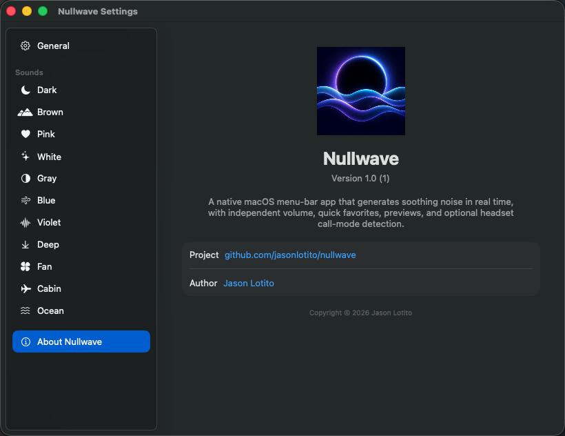

Your sound, your volume
Each sound remembers its own level. Set Dark to 30%, Brown to 20%, and move between them without constant readjustment.
Eleven shades of sound, generated locally on your Mac. One click to play. One click to stop. Nothing between you and focus.
Version 1.0 · macOS 14+ · Apple silicon
No accountNo trackingNo adsNo cost
Nullwave stays out of the way until you need it, then remembers exactly how you like every sound.
Each sound remembers its own level. Set Dark to 30%, Brown to 20%, and move between them without constant readjustment.
Choose up to three sounds for the menu-bar panel. Reorder them whenever your routine changes.
Explore another sound, then stop the preview or leave its page. Nullwave returns to what you were hearing before.
Play, stop, switch sounds, and set Nullwave’s independent volume without launching another copy.
$ nullwavectl noise brown
$ nullwavectl volume 25
$ nullwavectl playFrom low, enveloping rumble to bright, detail-masking energy—and a few familiar environments in between.
Low-passed and bass-heavy
Deep and softly weighted
Balanced for long listening
Even, bright masking energy
Shaped for perceived balance
Crisp, high-frequency detail
The brightest spectral color
Extra-low nighttime rumble
A steady mechanical hush
Low aircraft ambience
Slow, rolling wave motion

Nullwave is a true native menu-bar app. It launches at login when you ask, uses the system accent color, follows light and dark appearance, and generates audio locally.
Free, private, and ready for your menu bar. No account required.
macOS 14+ · Apple silicon · Signed and notarized